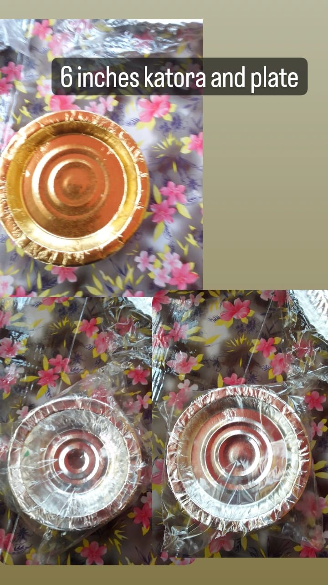

A serving bowl comes in handy in both formal parties and informal meals. It can be used for serving salads, rice, soup, etc. most of the time it is recommended to use a ceramic serving bowl since it a lot of benefits. Ceramic serving bowls are safe to use and have been used for a long time now.Katori is a small bowl which is a part of most table settings in Indian households. Mostly used to serve a portion of lentil or dessert.
